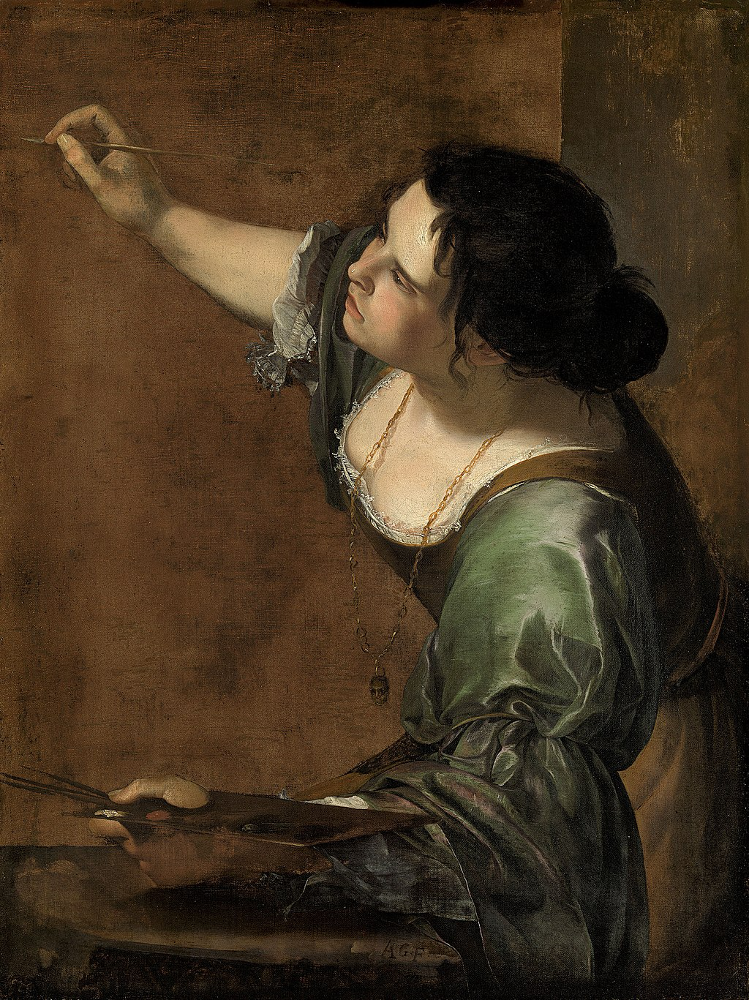

Penitent Magdalene
Artemisia Gentileschi

Penitent Magdalene
Artemisia Gentileschi
1625
Penitent Magdalene is a painting by the Italian artist Artemisia Gentileschi. It hangs in Seville Cathedral. It has probably been in the cathedral since the late 17th century. The painting's first home was the collection of Fernando Enriquez Afan de Ribera, from 1626 to 1637. She returned to the subject later in the 1620s in Mary Magdalene as Melancholy.
GO TO SOURCE